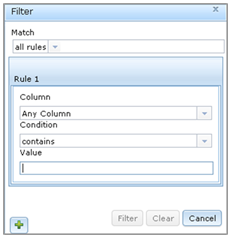

Prior to describing unique collections of terms to define variables for your project, you first need to select the terms to populate the vocabularies available for use in your project. The Controlled Vocabulary management interface allows the user to describe unique lists of terms for the following variable metadata elements:
You may notice there are some terms presented in the previous section do not appear in the list above. This is because the terms used to populate these lists are either fixed in VOEIS (and users may not edit them), or they are described at a later stage of the variable creation workflow.
Navigate to the Controlled Vocabulary management interface by selecting 'Manage Controlled Vocabulary' from the Project_Name dropdown menu.
Select a metadata element that you would like to manage terms for. A new tab appears. Notice there are no terms in displayed in the 'Local Terms' tab. Select the 'Global Terms' tab. The grid in this tab displays a global list of terms stored in VOEIS that you may select for use in your project. Generally, these terms correspond to those used in the CUAHSI-HIS. Explore the list by scrolling down through the availalbe terms. Another option for sorting the list is to apply custom filters. To do this, click the small button with the yellow arrow located in the upper left. This button calls the pop-out window below. Custom filtering rules are described using Boolean logic and applied to either a single column or multiple columns.

Scroll through the list and select the terms you would like to be available for use in your project and click the 'Copy Selected' button. If the' Global Terms' list does not contain the term you need for your project, you can define a new one by clicking the 'Create New Term' tab.
Navigate to the 'Local Terms' tab. You should now see the terms you selected displayed in the grid. If you do not see your terms here, select 'Refresh Tab' from the Project_Name dropdown menu. The right column of this grid contains four icons.
.
The pencil icon opens a tab for editing the term. Any edits are saved as versions, which in turn can be previewed by clicking the clock icon.
Review the versions by clicking on the various Version tabs. You can rollback to any previous version of a term at any time by selecting the "Rollback Version" button from the Version tab. You may remove a term from appearing in your project by clicking the red 'X' in the grid in the 'Local Terms' tab.
Repeat this controlled vocabulary management process for each metadata element available in the 'Manage Controlled Vocabulary' dropdown menu. If you are unsure of which terms you will need, don't worry, you can always come back later. Once you have successfully described a list of terms for each variable metadata element, you are ready to begin describing variables for use in your project.
Created with the Personal Edition of HelpNDoc: Easily create HTML Help documents